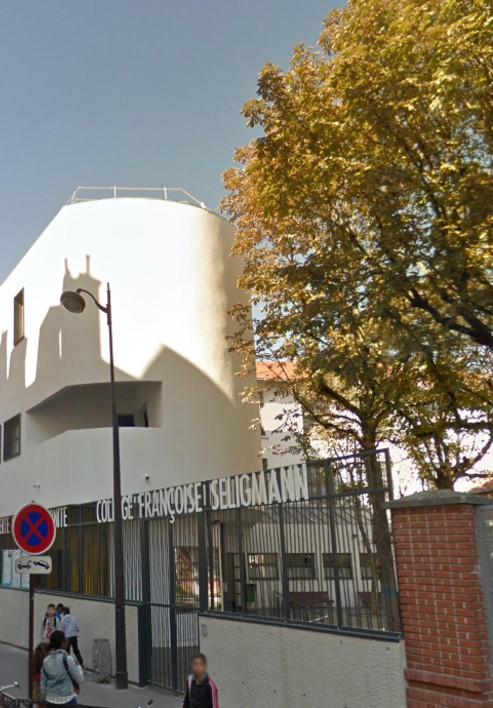
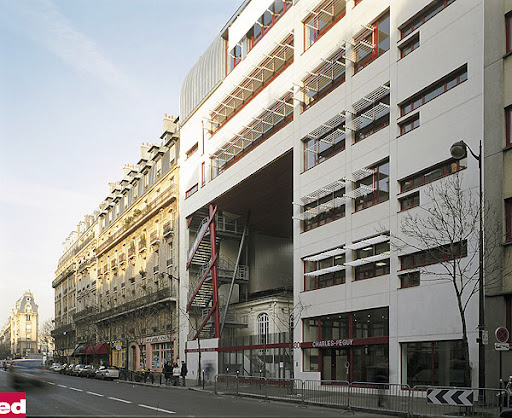
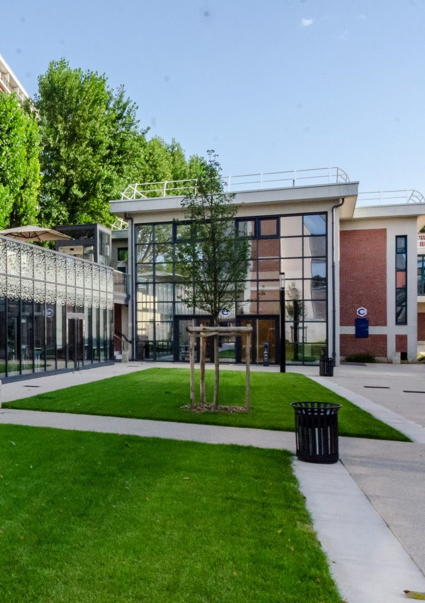
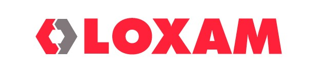
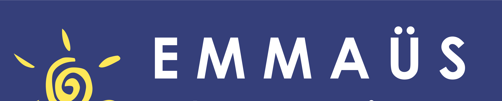

2017 - 2021
2021 - 2024
2024 - 2027

Collège Françoise Seligmann

Lycée Charles Péguy

EFREI Paris
Interview d'une professionnel dans le Marketing Digital

Stage de découverte d'une DSI

Stage associatif avec les bénévoles